People are most likely to plan trips in collaboration.
People are not very keen on seeing real time collaboration we assumed.
People are using cross-platform messengers like WhatsApp to share files and photos most of the time and not cloud services apps.
People do want to see files (photos, docs, notes) shared on a folder online. Future versions of the product this feature could be added.
Get to know the users -
Survey
I started the project with a survey to find out more about market gaps and potential users.


Understand competition -
SWOT
I did a SWOT analysis on three competitors: Tripit, Google trips and Tripline.
By studying their strengths and weaknesses I could identify market opportunities and avoid making the same mistakes.
From SWOT I identified an opportunity to enter market focusing on group travelers. Available solutions today are too focused on business travelers.
People can make travel plans using google trips but they can't collaborate.
Tripit charges big amount of money for that. And sharing itinerary are also limited for those who have the application installed only.
Keep Accountable -
Personas
After conducting user surveys along with user interviews, I created two personas to represent the customers and drive the project and avoid scope creep . Lin a working mother who plans her family trips. And Natalie a young sales representative who travels a lot for work and for fun with friends.


Understand tasks and users need -
User Stories + User Flows
Based on the personas I identified and prioritized the user stories taking priority and effort into consideration. Then. I took all the high priorities and turned them into user flows. This helps to visualize the processes needed to complete the Minimum Viable Product (MVP).

Test early and test often -
Sitemap, Wireframes + Test
The next step was to create a sitemap and wireframes. The site map helps me to visualize how to organize information before attempting to sketch it. So, after several paper sketches trials I was ready to work on the wireframes. Wireframes are the first attempt to how the information is going to be laid out on the page, how the features and buttons are going to be organized. And to catch initial issues I asked a few users to test it. This was the first usability testing.
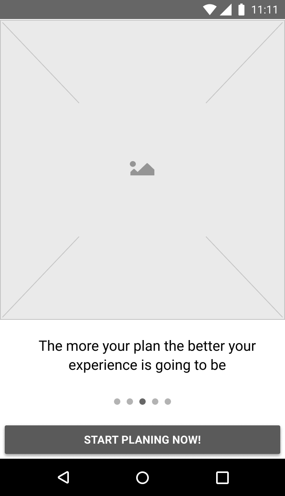
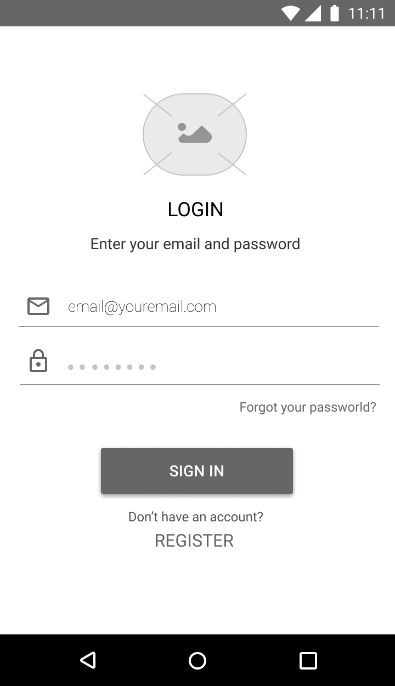
 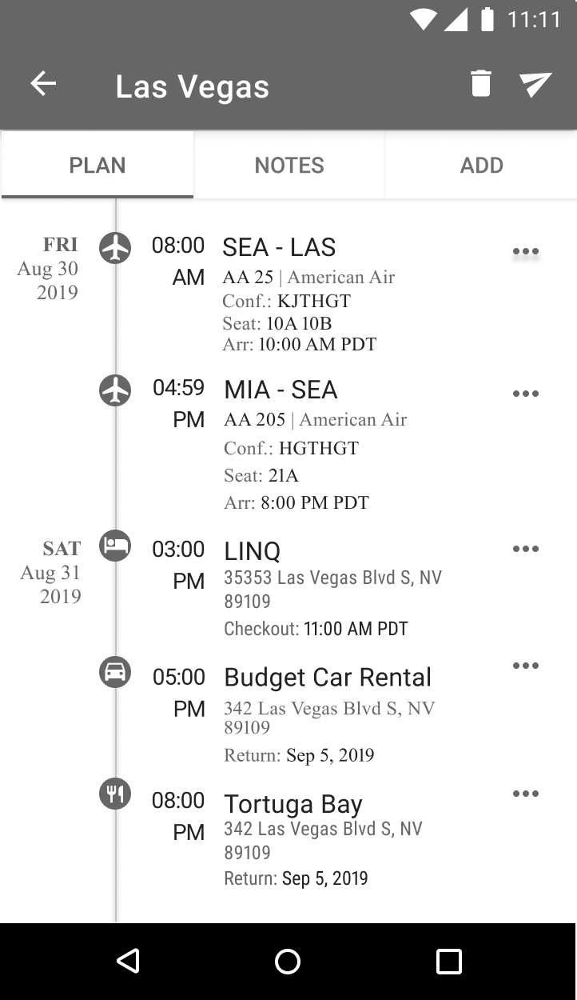
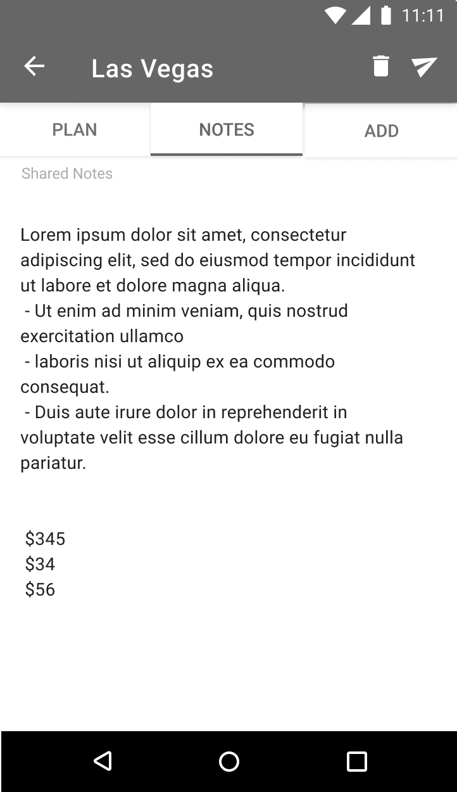
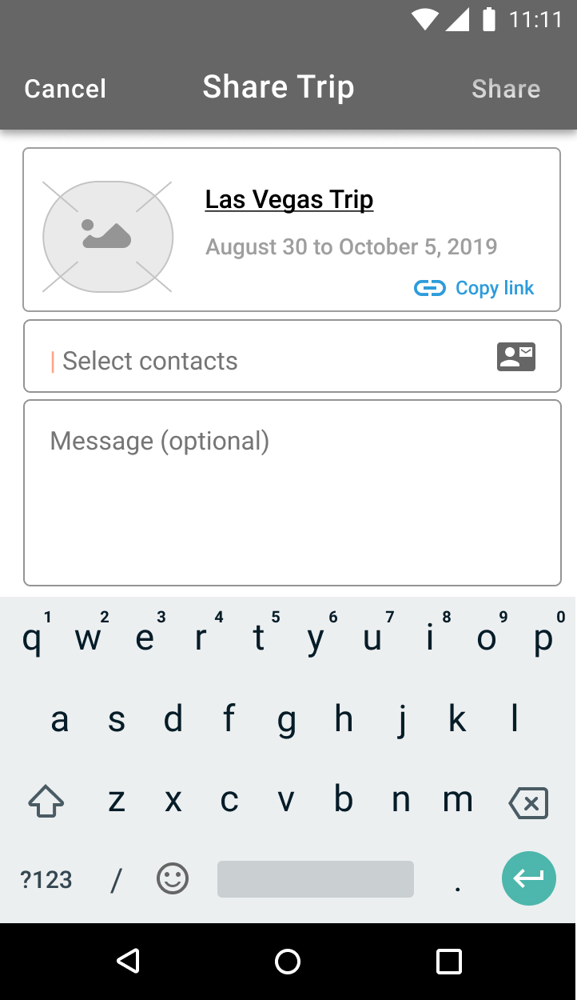
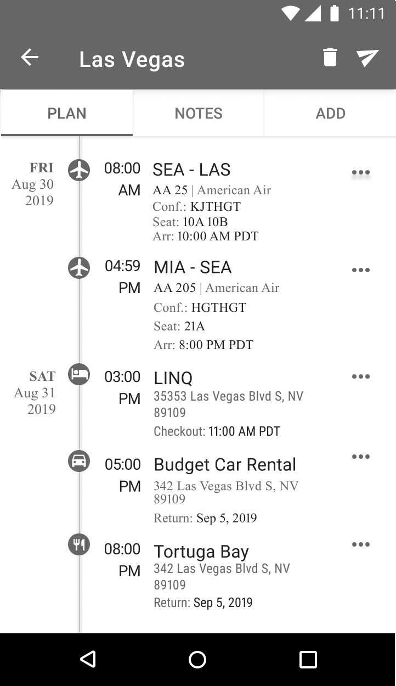
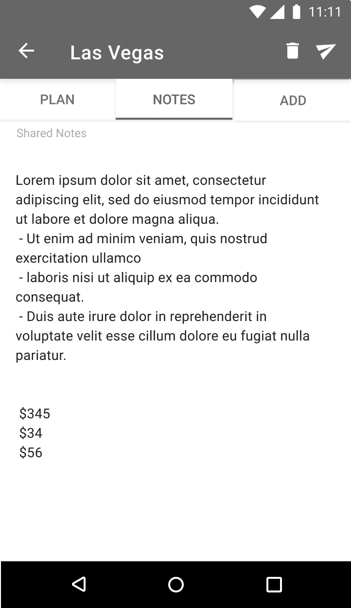
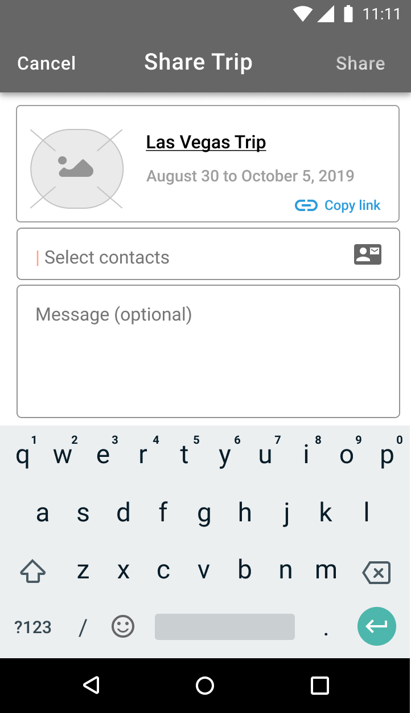
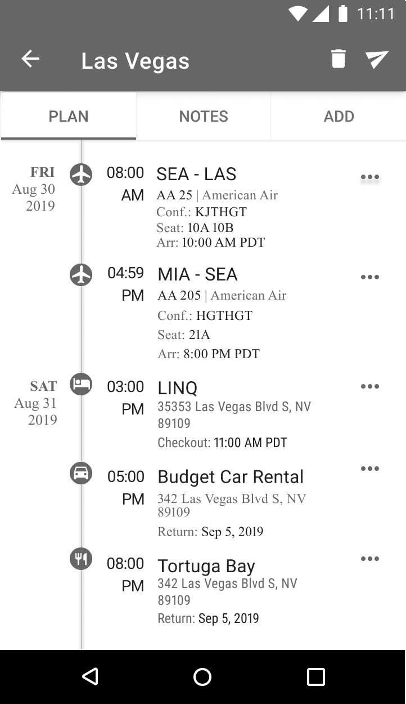
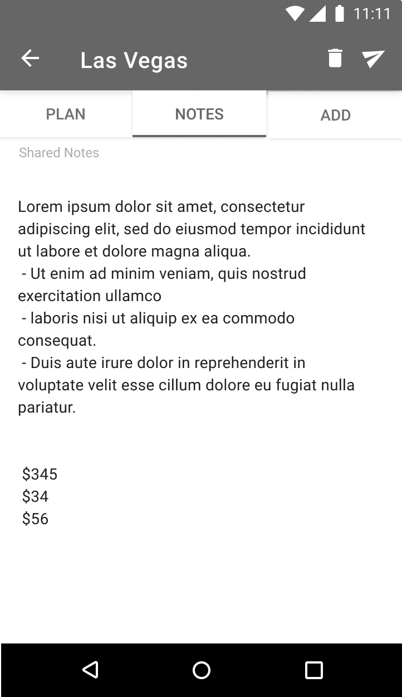
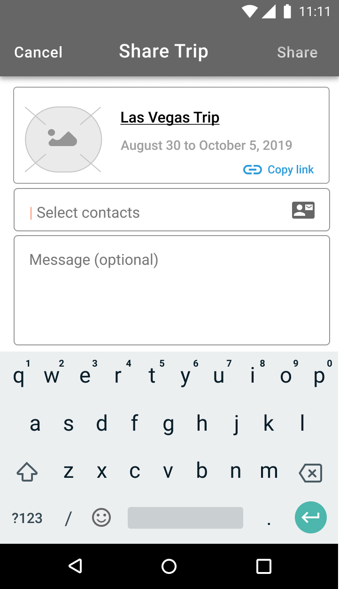
Reorganized content on the page (tabs and buttons)
I added new feature for meetings
Increased Icons size
Added few more description details
Create Identity -
Branding
Fui was created to help busy people to coordinate their travel plans so they can have a great travel experiences. Planning a vacation with friends should be fun from the very beginning, and FUI is here to help people travel stress free. With that in mind the words: Playful, trustworthy, clean and fly comes to mind. Based on those the brand was created. I like to start with a mood board, and there I place all ideas and inspirations.


Name - I was looking for something short, simple and fun but also unique. FUI, in Brazilian Portuguese means “gone” or “I am out of here”. Why Portuguese? Because that’s where the app is from.
Colors - FUI is different from all the existing business oriented travel apps. So I moved away from all white and blue. Pink is feminine but it's also fun and playful, it’s inviting for mothers who usually do the family vacation plans. Blue is a color loved by everyone, it reminds us of the sky, but it’s also associated with stability and trust which is our brand strongly identify. Yellow is associated with happiness.
Logo - Logo started with tons of sketching on paper. Eventually I narrowed down to 3 best. I designed roughly all 3 on figma and asked a few people which one they like the best. The paper plane was everyone’s favorite. Since it’s very playful thought it would represent the brand well.
Informed prototype -
Preference testing
Before I tested the full high-fidelity mock-ups with interactions, I conducted a preference test. I was not sure about some colors and layout, icons choices and tabs names. I asked 10 different people to choose which ones they preferred and updated my designs based on my findings.


Dark grey instead Pink for navigation bar titles. “Pink color may look like red and means errors”.
Keep home screen icons. Helps with visualization of content “pictures of flights and plans and hotels makes it clearer and is nice".
Simple instead of colored Icons. Users said simple icons are more readable.
Creating a plan after adding a booking and create a plan without booking. Most users want to plan vacation before buying tickets. So I should have both options.
Remove bottom navigation and add more details on trip plans for home screen.
High-Fidelity -
Final test
Several iterations produced before landing onto the final prototype created with figma.
Finally, I added iterations to the high-fidelity mock-ups and asked users to do a final test. It aimed to understand how users would respond to look and feel.
The overall impression was great, people were very excited with the app possibilities and were keen to share their ideas for features improvements. It was invaluable to get their feedback. The brand response seemed to be a success.

Reflection
This was my very first UX project from start to finish. It was a challenge and the learning curve was steep. The experience was incredibly valuable.
I also learned the power of testing, test early and test often. There is nothing like a fresh set of eyes to uncover flaws in early stages. But it also very important to know how to judge feedback. Everyone has great feature ideas and want it to look a certain way. It’s important to focus on your persona and avoid scope creep and focus on the MVP product. For a little while I lost focus. I had to step back many times.
If I had more time and resources, I would have worked harder on the information architecture, logo and name. I would do a few more runs on A/B testing until I was completely satisfied with the user experience. UX is the key for any product success.
For future projects I will spend more time on the IA, that is the biggest challenge on the UI, and then I'll use my mood board and start playing with HIFI layouts before creating a style guide.